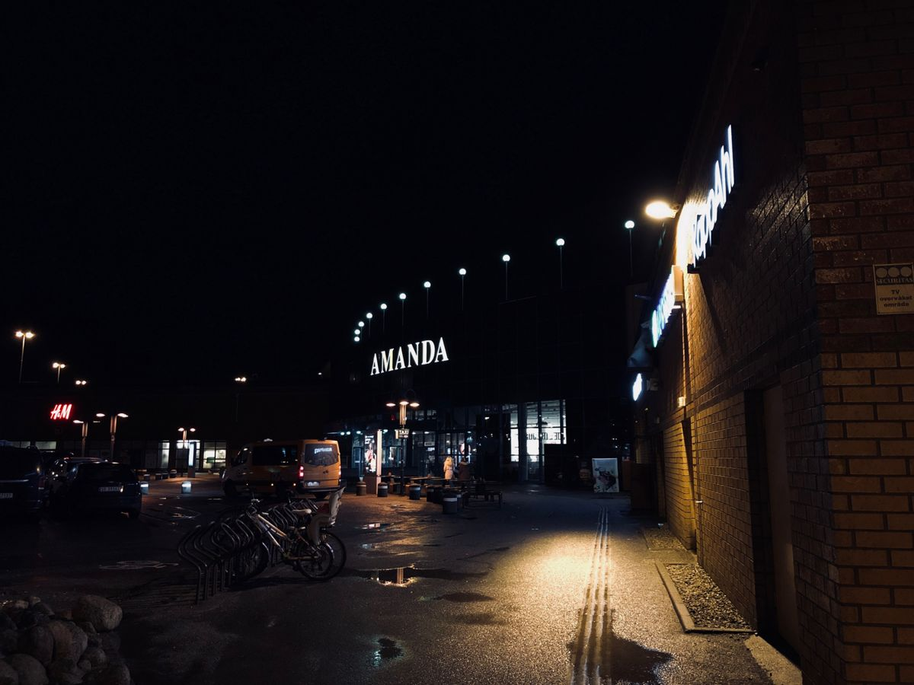

Dette er då ikke en egentlig hjemmeside for noen bedrift, men jeg har valgt å lage et eksempel som skal forestille seg en.
Denne "Nettsiden" sitt formål er å vise mine egenskaper generelt sett.
På denne nettsiden så kan du finne blant annet det jeg holder på med, altså de tjenestene jeg yter, om meg personlig som en person. Mine ambisjoner og drømmer, og hvordan du kan kontakte meg.
Jeg takker mine gode venner fra både IKT og media og kommunikasjon for å hjelpe meg med blant annet design, bilder og tilbakemeldinger.
Eryk Czapp - Media og kommunikasjon, Vardafjell VGS
Henrik Norheim - IKT Servicefag, Haugaland VGS
Mathias Tvedt - IKT Servicefag, Haugaland VGS
